Créer un lead magnet LinkedIn qui attire des prospects
Je construis une ressource utile, je la publie sur LinkedIn, je demande un commentaire simple, puis j’envoie le dossier en message privé. Le but n’est pas de faire joli. Le but est de créer un système qui ramène des abonnés, du trafic, des conversations et des rendez-vous.
100sections
27images dans le support
LinkedIncouleur
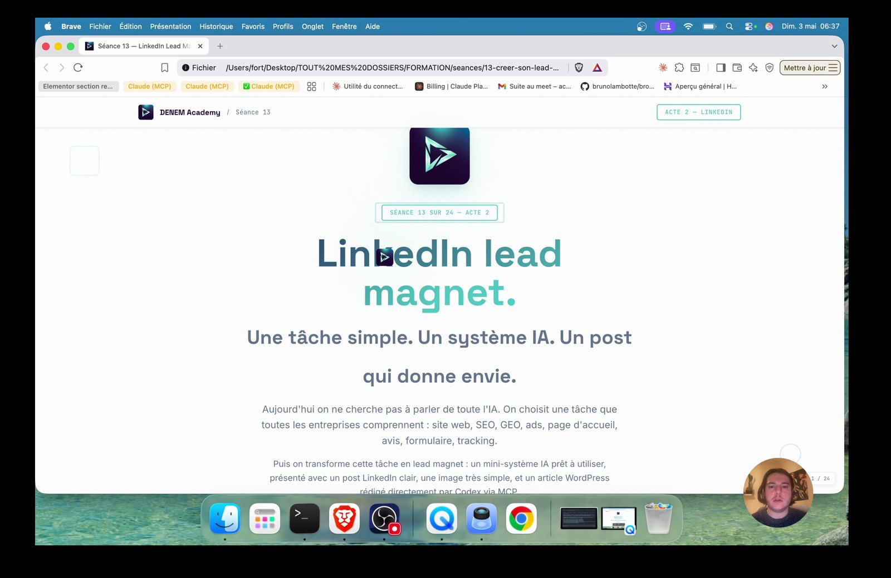
Le post Data.gouv sert de preuve : un bon lead magnet peut créer énormément de commentaires.
Je pars d’un principe simple : une bonne ressource doit être utile avant d’être commerciale. Je cherche une idée, je vérifie qu’elle intéresse vraiment les gens, je crée le livrable, je prépare le post, puis je gère les commentaires et les messages.
Un lead magnet, c’est une promesse courte, une ressource concrète et une action claire. Si quelqu’un commente, il doit recevoir quelque chose qu’il peut utiliser tout de suite. Sinon, la confiance descend et le post devient juste une accroche vide.
Un sujet qui parle à beaucoup de personnes.
Un livrable facile à comprendre.
Une preuve que je l’ai vraiment construit.
Un CTA simple : commente un mot précis.
Un message privé court pour envoyer la ressource.
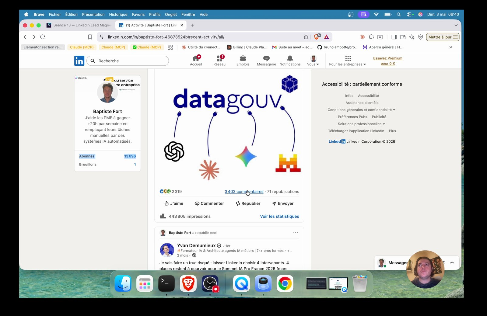
Les commentaires sont le signal visible : si la ressource intéresse, les gens réagissent.
004
Objectif
Ce que je cherche à obtenir
Je ne publie pas seulement pour faire des likes. Je veux créer une boucle commerciale complète : visibilité, commentaires, connexions, trafic, SEO, GEO et appels qualifiés.
Visibilité
Plus le post reçoit d’interactions, plus LinkedIn le pousse.
Confiance
La ressource prouve que je sais faire, pas seulement parler.
Prospects
Les personnes qui commentent lèvent déjà la main.
Trafic
Le lien vers mon site ou ma ressource peut améliorer mon positionnement.
005
Post de référence
Les posts LinkedIn à relier dans le support
Je garde les liens cliquables vers les posts importants. L’élève peut ouvrir les exemples réels, regarder le hook, les commentaires, l’image, puis comparer avec sa propre publication.
Exemple d’un post lead magnet : ressource gratuite, preuve visuelle, commentaires, impressions.
006
Diagnostic
Si ton post ne donne pas envie de commenter, le problème vient souvent du livrable
Le hook compte, mais il ne sauve pas une ressource faible. Je veux que la personne se dise : « si je commente, je gagne du temps ». C’est cette sensation qui déclenche l’action.
Avant
Je donne mon avis sur un outil IA.
Après
Je donne un système prêt à utiliser pour récupérer des leads, auditer des campagnes ou créer une page.
Signal faible
Si le post ressemble à une opinion, il attire moins de commentaires qu’une ressource actionnable.
007
Structure
La mécanique LinkedIn que j’utilise
Je publie une ressource, je demande de commenter un mot, puis j’envoie le lien en privé. C’est simple, mais ça crée trois effets : plus d’engagement, plus de connexions, plus de conversations.
Publier un hook clair.
Expliquer ce que contient la ressource.
Demander un commentaire simple.
Répondre ou envoyer en DM.
Relancer proprement si la personne n’a pas ouvert.
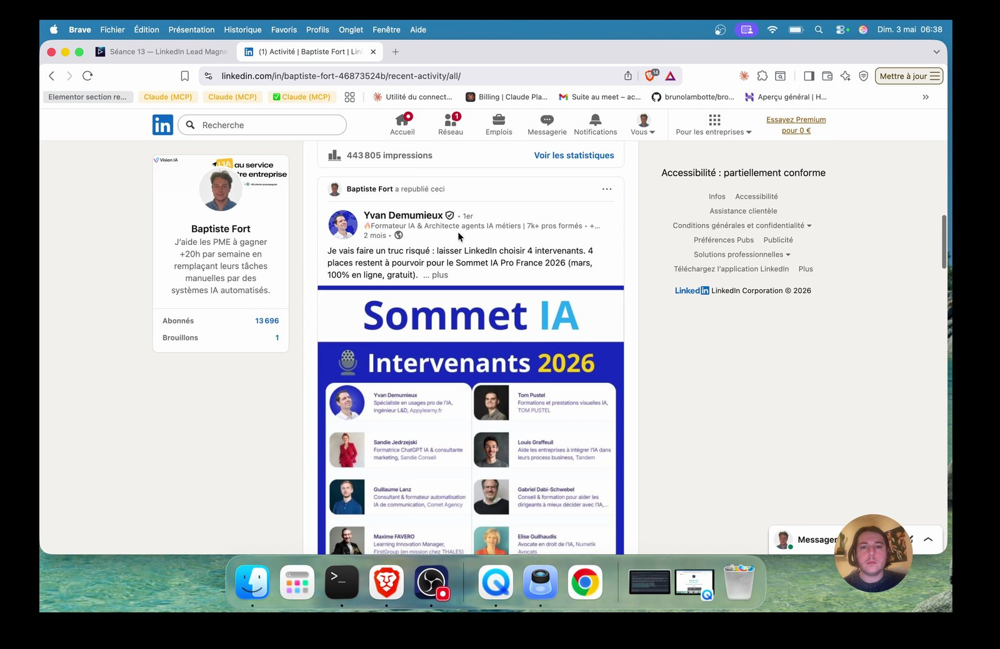
Je réponds aux commentaires et je prépare le passage en message privé.
008
Principe
Je ne vends pas dans le premier message
Le premier message sert à donner la ressource. La vente arrive seulement si la discussion s’ouvre naturellement. Cette posture change tout : la personne ne se sent pas piégée.
La ressource doit être tellement claire que la personne comprend déjà mon niveau avant même de réserver un appel.
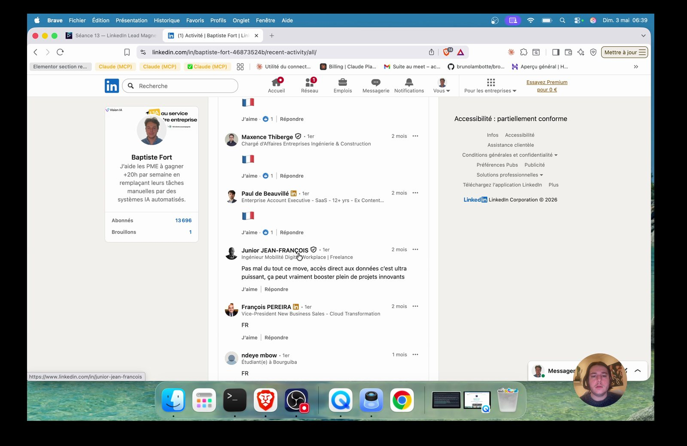
Le message privé est court : je donne le guide et je garde la relation simple.
009
Choix du sujet
Les familles de lead magnets qui fonctionnent bien
Je ne me limite pas à ma niche au départ. Si mon compte n’a pas encore beaucoup d’abonnés, je peux publier des ressources IA utiles à beaucoup de dirigeants et indépendants.
Famille
Pourquoi ça marche
Exemple
Leads
Tout le monde veut trouver des prospects
Google Maps + n8n : 10 000 leads
SEO
Toute entreprise veut être trouvée
Assistant SEO gratuit
GEO
Sujet nouveau, curiosité forte
Claude Skills pour le GEO
Data
Données publiques mal exploitées
Data.gouv + Claude
Ads
Budget concret, douleur immédiate
Meta Ads connecté à Claude
010
Hook
La première ligne doit créer le réflexe « je veux ça »
Je passe du temps sur le hook. C’est la première phrase que LinkedIn affiche avant le bouton « plus ». Elle doit être compréhensible sans contexte.
Un bénéfice visible.
Un outil connu ou une nouveauté forte.
Une promesse concrète.
Pas de mot trop technique.
Pas de phrase molle.
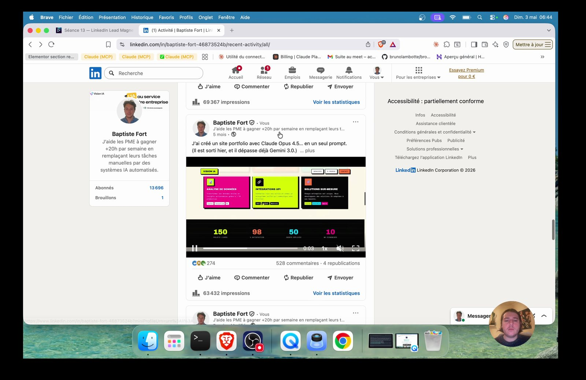
Exemple : Google Maps + n8n, la promesse est immédiate.
011
Étape 11
Preuve sociale
Les commentaires ne sont pas juste de l’engagement. Ils prouvent que la ressource intéresse vraiment des gens.
visiblepreuve
commentaireaction
DMsuite
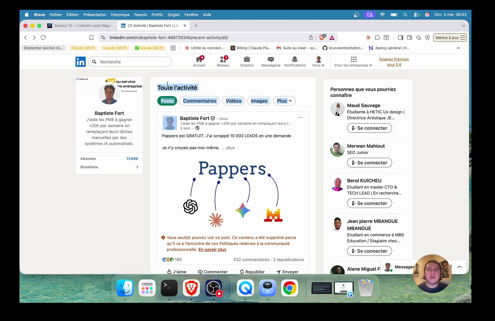
Preuve sociale
012
Étape 12
Recyclage intelligent
Un ancien post peut être recyclé si je change le hook, l’angle et le livrable. Je ne copie pas, je reformule.
Avant
Je publie une idée ou une opinion.
Après
Je publie une ressource que la personne veut recevoir.
Recyclage intelligent
013
Étape 13
Pourquoi viser large au début
Au départ, je veux chauffer mon compte et montrer une expertise IA générale. Ensuite je peux revenir vers ma niche.
Idée
Une promesse courte.
Livrable
Un dossier ou une page utile.
Preuve
Une capture ou un exemple réel.
Action
Un mot à commenter.
014
Étape 14
La limite du contenu trop niche
Si je parle uniquement à ma micro-cible dès le départ, je risque d’avoir peu de portée. Je construis d’abord un socle.
Piège à éviter
Si je promets trop, si je parle trop technique ou si je livre une ressource faible, la confiance disparaît.
015
Étape 15
La veille sur X
X permet souvent de repérer les nouveautés avant qu’elles deviennent populaires sur LinkedIn.
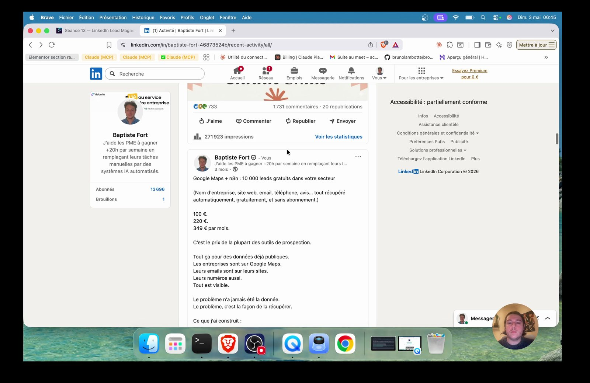
La veille sur X
016
Étape 16
Trouver une nouveauté exploitable
Je cherche une annonce, un connecteur, une librairie, un outil ou une méthode que je peux transformer en guide.
Générer des idées de lead magnets
Tu es stratège LinkedIn B2B.
Je veux générer des idées de lead magnets IA simples, utiles et applicables rapidement.
Contexte :
- Mon offre : [TON_OFFRE]
- Ma cible : [TA_CIBLE]
- Mon niveau technique : [TON_NIVEAU]
- Mes outils : Claude, ChatGPT, Codex, n8n, Make, Apify, Data.gouv, Pappers, WordPress, Elementor.
Donne-moi 30 idées classées par famille :
SEO, GEO, ADS, SITE, LEADS, DATA_GOUV, APIFY, MAPS, PAPPERS, MARCHES, ECOM, AVIS, CRM, REDDIT, EMAIL, CONTENU.
Pour chaque idée :
1. Hook LinkedIn
2. Ressource offerte
3. Ce que la personne obtient
4. Prompt ou workflow à utiliser
5. Niveau de difficulté
6. Pourquoi ça peut générer des commentaires
Contraintes :
- pas de jargon
- bénéfice visible en 5 secondes
- utilisable par une PME
- pas de promesse magique
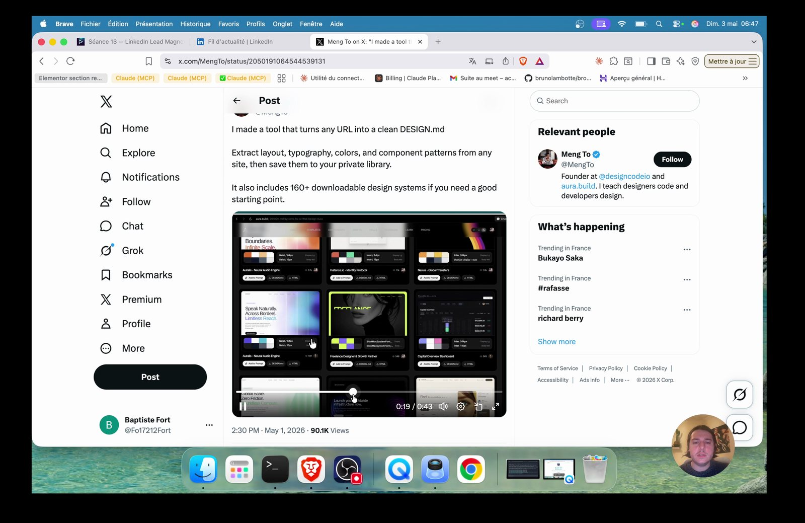
Trouver une nouveauté exploitable
017
Étape 17
Séparer hype et utilité
Une nouveauté seule ne suffit pas. Je dois vérifier qu’elle peut devenir une ressource simple à refaire.
Question
Réponse attendue
La promesse est claire ?
Oui, en une ligne
Le livrable est prêt ?
Oui, avant publication
Le CTA est simple ?
Oui, un mot
La suite est prévue ?
Oui, DM + lien
018
Étape 18
Analyser les posts viraux
Je regarde le hook, la preuve visuelle, le niveau de simplicité et la promesse. Je ne copie pas le style, je comprends la mécanique.
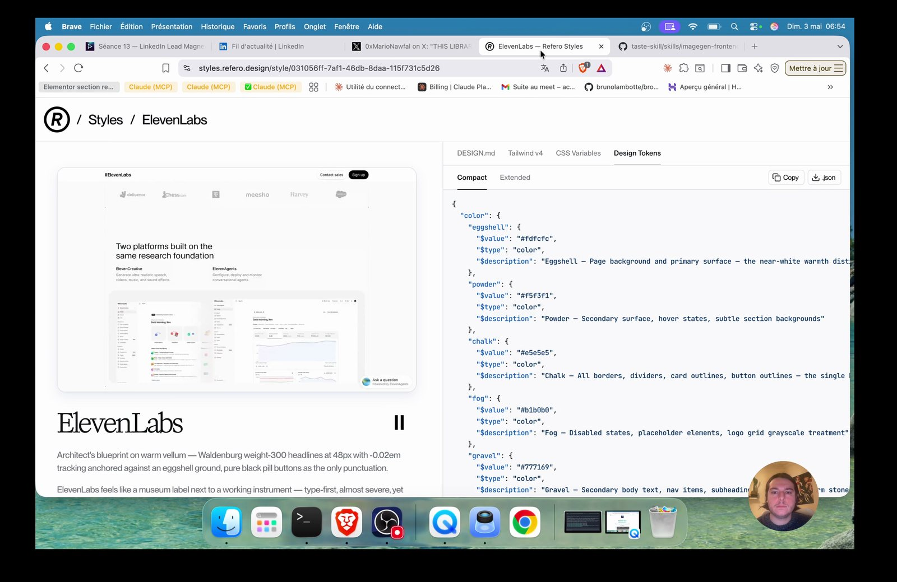
Analyser les posts viraux
019
Étape 19
Utiliser Refero pour le design
Je peux regarder des références de design pour comprendre les styles, sans importer d’images externes dans la présentation.
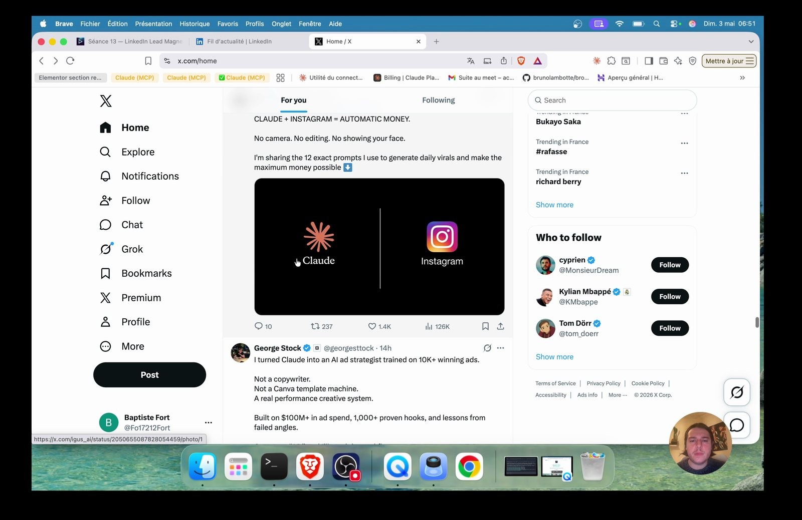
Utiliser Refero pour le design
020
Étape 20
Pourquoi le design compte
Quand la ressource arrive dans un dossier ou une page propre, la personne sent que le travail est sérieux.
Idée
Une promesse courte.
Livrable
Un dossier ou une page utile.
Preuve
Une capture ou un exemple réel.
Action
Un mot à commenter.
021
Étape 21
Passer de l’idée au test
Je ne publie pas une idée avant de tester que le workflow fonctionne. Sinon je promets un livrable que je ne maîtrise pas.
Je formule l’idée.
Je teste que ça fonctionne.
Je crée le dossier.
Je prépare le post.
Je publie et j’envoie.
022
Étape 22
Codex comme assistant de production
J’utilise Codex pour écrire, organiser, construire des pages et accélérer la production du livrable.
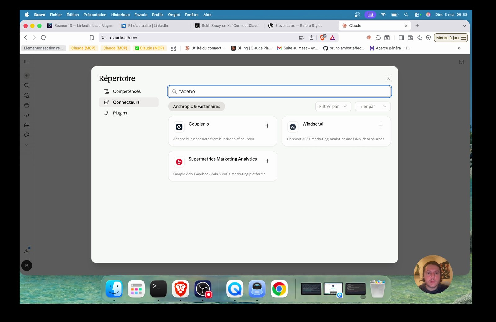
Codex comme assistant de production
023
Étape 23
Créer un article WordPress
Le site peut héberger le livrable, améliorer le SEO et donner une preuve professionnelle.
Aller dans les articles
okay top va dans la partie article stp
Créer un nouvel article
créer un nouveau article stp
Créer l’article WordPress
créer un nouveau article stp sur ce sujet n'oublie pas on parle de quoi plz le but c'est de faire un article de 1600 mots soit naturel amical comprehensible n'en rajoute pas sur tes mots reste simple et faut des liens interne externe stp
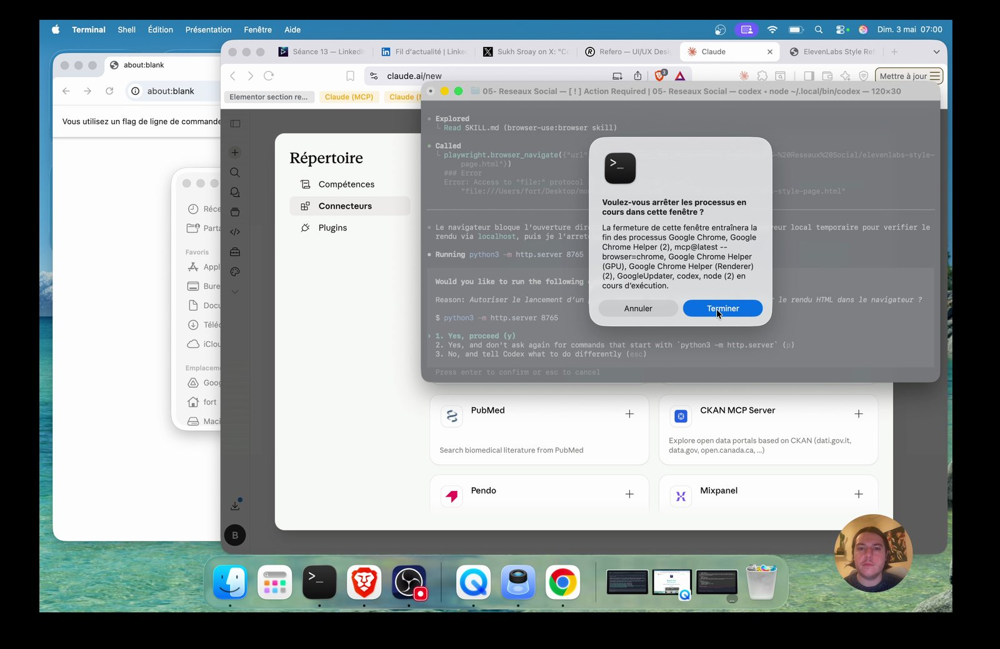
Créer un article WordPress
024
Étape 24
Garder le style naturel
Je demande explicitement un article simple, amical et compréhensible. Je ne veux pas un texte trop marketing.
Je veux que la personne puisse utiliser la ressource sans avoir besoin de moi pour comprendre la première étape.
025
Étape 25
Créer des liens internes et externes
Un article utile doit orienter vers d’autres ressources. Les liens aident l’élève et renforcent la structure SEO.
Hook compréhensible
Ressource utilisable
Lien testé
Prompt copiable
CTA clair
026
Étape 26
Rester simple dans les mots
Le support doit être compris par une PME, pas seulement par un expert IA.
Question
Réponse attendue
La promesse est claire ?
Oui, en une ligne
Le livrable est prêt ?
Oui, avant publication
Le CTA est simple ?
Oui, un mot
La suite est prévue ?
Oui, DM + lien
027
Étape 27
Créer l’image du post
L’image sert à comprendre l’idée en une seconde : Meta Ads relié à Claude.
Créer le visuel du post
fait moi une image ou on voit meta ads connecter a claude stp tres simple fond blanc avec les bons logos
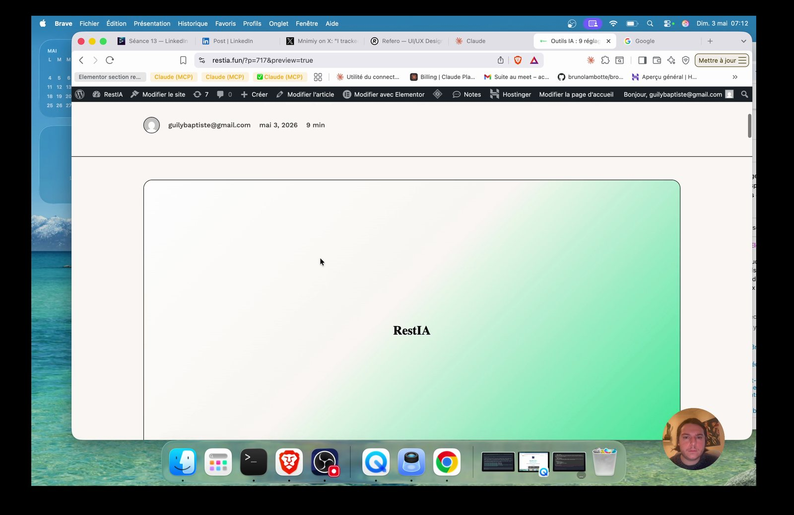
Créer l’image du post
028
Étape 28
La force d’un visuel minimal
Fond blanc, bons logos, relation claire. Pas besoin d’une illustration compliquée.
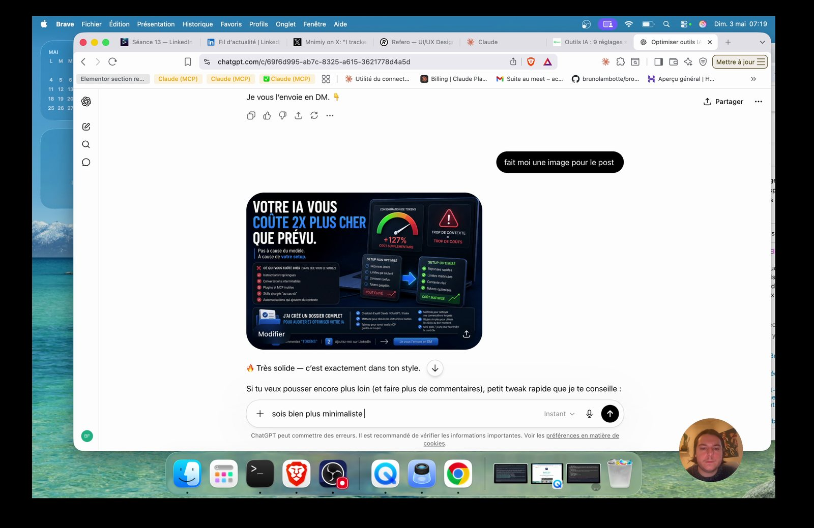
La force d’un visuel minimal
029
Étape 29
Rendre le post plus tranchant
Si le hook est trop tiède, je demande une version plus directe. Le but est de créer une vraie tension.
Renforcer le hook
non soit plus tranchant bullshit pousse ta reflexion
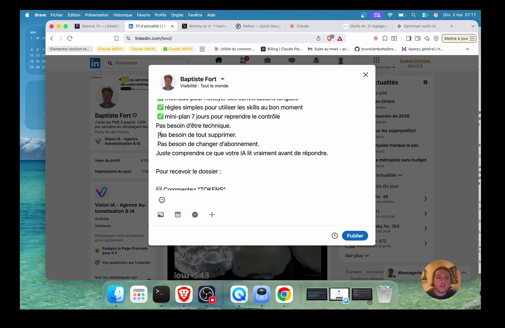
Rendre le post plus tranchant
030
Étape 30
Limiter les emojis
Les emojis peuvent aider, mais trop d’emojis donnent un rendu amateur. Je garde le post propre.
Nettoyer le ton
MET PAS TROP D'EMOJI SRT
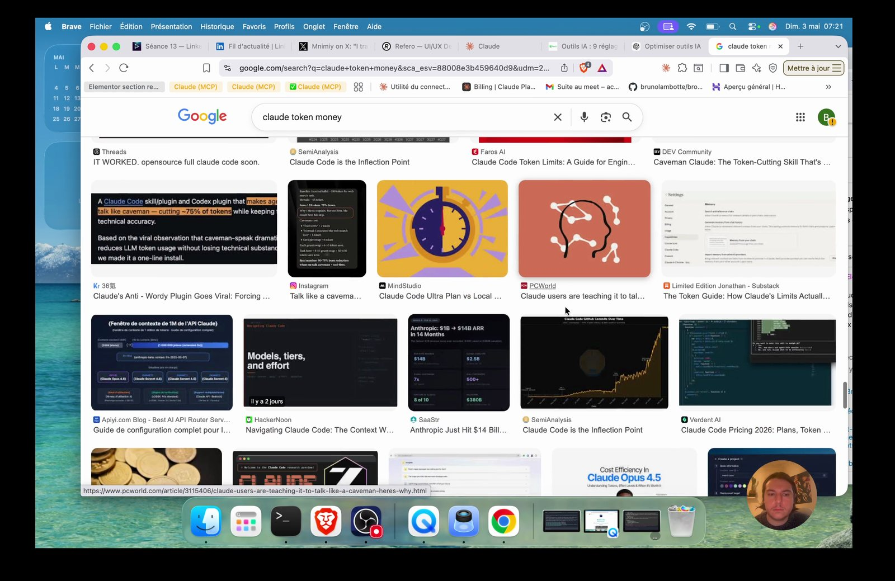
Limiter les emojis
031
Étape 31
Créer un dossier Notion
Notion permet de livrer une ressource claire, structurée et partageable rapidement.
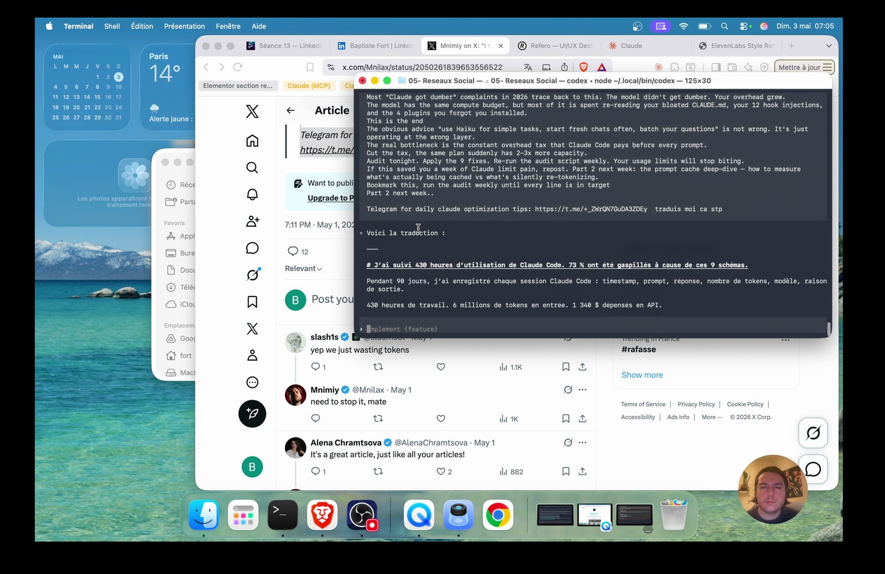
Créer un dossier Notion
032
Étape 32
Installer le connecteur Notion
Le connecteur permet à ChatGPT de créer ou compléter des pages quand l’accès est correctement donné.
Je formule l’idée.
Je teste que ça fonctionne.
Je crée le dossier.
Je prépare le post.
Je publie et j’envoie.
033
Étape 33
Comprendre les permissions
Je vérifie ce que l’application peut faire avant de l’autoriser. Un connecteur doit être utile et maîtrisé.
Question
Réponse attendue
La promesse est claire ?
Oui, en une ligne
Le livrable est prêt ?
Oui, avant publication
Le CTA est simple ?
Oui, un mot
La suite est prévue ?
Oui, DM + lien
034
Étape 34
La page parent Notion
Si la création de page bloque, je donne une page parent existante. Les connecteurs ont besoin d’un emplacement.
Piège à éviter
Si je promets trop, si je parle trop technique ou si je livre une ressource faible, la confiance disparaît.
Une page vide devient un dossier complet quand je donne la structure exacte et le contexte.
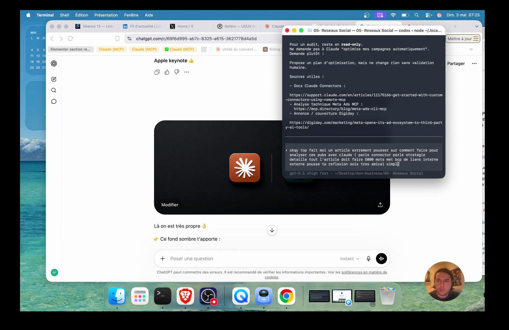
Transformer une page vide
036
Étape 36
La page d’accueil du dossier
La première page explique à qui s’adresse le dossier, ce qu’il contient et comment l’utiliser.
Idée
Une promesse courte.
Livrable
Un dossier ou une page utile.
Preuve
Une capture ou un exemple réel.
Action
Un mot à commenter.
037
Étape 37
Sommaire cliquable
Le sommaire permet à la personne de trouver vite le bon prompt, la bonne méthode ou la bonne checklist.
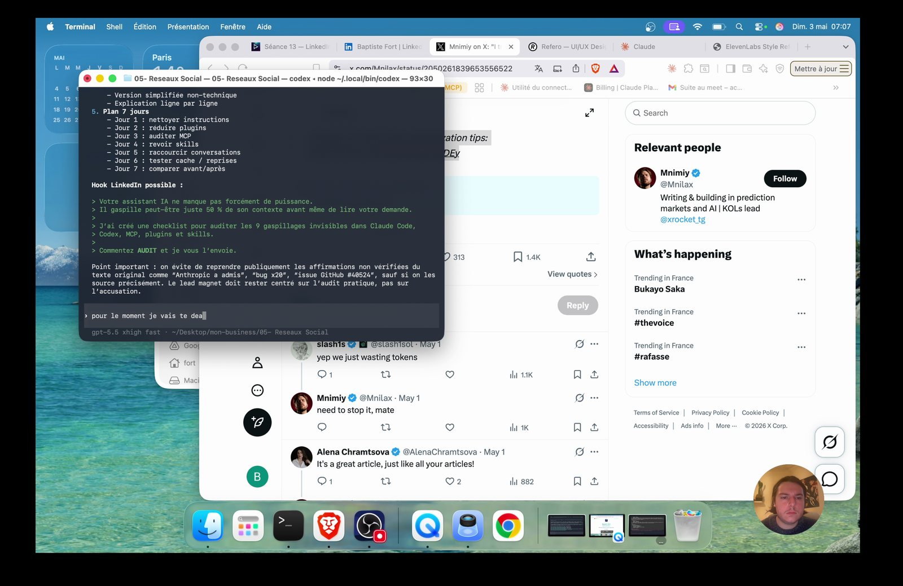
Sommaire cliquable
038
Étape 38
Créer les sous-pages
Je découpe le dossier en blocs : stratégie, connexion, prompts, KPI, garde-fous, plan d’action.
Je formule l’idée.
Je teste que ça fonctionne.
Je crée le dossier.
Je prépare le post.
Je publie et j’envoie.
039
Étape 39
Prompt de dossier complet
Je donne un prompt clair pour créer le dossier sans oublier les pages importantes.
Créer le dossier complet
Tu vas créer un dossier complet pour mon lead magnet.
Sujet : [SUJET]
Cible : [CIBLE]
Objectif : [OBJECTIF]
Livrables attendus :
- un sommaire clair
- les prompts exacts
- une méthode étape par étape
- une checklist
- une matrice de décision
- un exemple complet
- un plan d'action 7 jours
Style : simple, naturel, direct, pas corporate.
Créer la page Notion
Crée une page Notion intitulée [NOM_DU_DOSSIER].
Je veux un dossier complet pour aider quelqu'un à utiliser [OUTIL/SUJET].
Structure :
1. Bienvenue
2. Ce que tu vas apprendre
3. Prérequis
4. Étapes de connexion
5. Prompts exacts
6. Méthode d'audit
7. KPI utiles
8. Erreurs à éviter
9. Plan d'action 7 jours
Ton : simple, direct, pédagogique, pas corporate.
040
Étape 40
Bienvenue utile
Je commence par dire pourquoi le dossier existe. Pas besoin d’une introduction longue.
Je veux que la personne puisse utiliser la ressource sans avoir besoin de moi pour comprendre la première étape.
041
Étape 41
Prérequis
Je liste les comptes, accès et outils nécessaires avant de lancer l’audit. Ça évite les blocages.
Hook compréhensible
Ressource utilisable
Lien testé
Prompt copiable
CTA clair
042
Étape 42
Connexion Meta Ads
Le coeur du lead magnet : connecter Meta Ads à Claude pour lire les vraies données publicitaires.
Connexion Meta Ads
043
Étape 43
Audit en 20 minutes
Je donne un chemin court : connecter, poser les questions, interpréter, décider.
Idée
Une promesse courte.
Livrable
Un dossier ou une page utile.
Preuve
Une capture ou un exemple réel.
Action
Un mot à commenter.
044
Étape 44
KPI vraiment utiles
Je ne regarde pas tous les chiffres. Je cible ceux qui aident à décider : coût, ROAS, fatigue, conversion, budget.
KPI
Question à poser
Décision
Budget dépensé
Où part mon budget ?
Réallouer
ROAS
Quelles campagnes créent de la valeur ?
Garder ou scaler
CPA
Quel coût d’acquisition est acceptable ?
Couper ou tester
Créa
Quelle publicité fatigue ?
Rafraîchir
045
Étape 45
Budget et campagnes
Une bonne question à Claude : où part mon budget et quelle campagne mérite d’être gardée ?
Je veux que la personne puisse utiliser la ressource sans avoir besoin de moi pour comprendre la première étape.
046
Étape 46
Analyser les créas
Je veux savoir quelles publicités tiennent dans le temps et lesquelles fatiguent.
Hook compréhensible
Ressource utilisable
Lien testé
Prompt copiable
CTA clair
047
Étape 47
Décider quoi tester
Le dossier doit sortir un plan d’action, pas seulement un diagnostic.
Je formule l’idée.
Je teste que ça fonctionne.
Je crée le dossier.
Je prépare le post.
Je publie et j’envoie.
048
Étape 48
Matrice garder scaler tester
Chaque campagne peut être classée : je garde, je scale, je teste, ou je coupe.
Décision
Quand l’utiliser
Action
Garder
Résultat stable
Ne pas toucher trop vite
Scaler
Bon résultat + budget disponible
Augmenter progressivement
Tester
Signal intéressant mais fragile
Lancer variante
Couper
Budget perdu sans apprentissage
Arrêter proprement
049
Étape 49
Garde-fous MCP
Le connecteur peut lire des données sensibles. Je rappelle les limites et les précautions.
Piège à éviter
Si je promets trop, si je parle trop technique ou si je livre une ressource faible, la confiance disparaît.
050
Étape 50
Créer une bibliothèque de prompts
Je regroupe les prompts dans le dossier pour que l’élève puisse les réutiliser.
Structurer la ressource dans Notion
Crée une page Notion intitulée [NOM_DU_DOSSIER].
Je veux un dossier complet pour aider quelqu'un à utiliser [OUTIL/SUJET].
Structure :
1. Bienvenue
2. Ce que tu vas apprendre
3. Prérequis
4. Étapes de connexion
5. Prompts exacts
6. Méthode d'audit
7. KPI utiles
8. Erreurs à éviter
9. Plan d'action 7 jours
Ton : simple, direct, pédagogique, pas corporate.
051
Étape 51
Créer une ressource partageable
Le dossier doit être assez clair pour être envoyé sans explication orale.
Question
Réponse attendue
La promesse est claire ?
Oui, en une ligne
Le livrable est prêt ?
Oui, avant publication
Le CTA est simple ?
Oui, un mot
La suite est prévue ?
Oui, DM + lien
052
Étape 52
Préparer le post LinkedIn
Une fois le livrable prêt, je construis le post autour de lui, pas l’inverse.
Transformer la ressource en post LinkedIn
Aide-moi à transformer cette ressource en post LinkedIn.
Je veux un post naturel, utile, direct.
Sujet : [SUJET]
Ressource offerte : [RESSOURCE]
Cible : [TA_CIBLE]
Call to action : commente [MOT]
Contraintes :
- hook fort dès la première ligne
- phrases courtes
- pas trop d'emoji
- ton humain
- pas de blabla
- explique ce que la ressource contient
053
Étape 53
Le CTA commentaire
Je choisis un mot simple, facile à retenir, lié au sujet : ADS, DATA, SEO, GEO.
Idée
Une promesse courte.
Livrable
Un dossier ou une page utile.
Preuve
Une capture ou un exemple réel.
Action
Un mot à commenter.
054
Étape 54
Programmer le post
Je peux programmer le post pour publier au bon moment, puis être disponible pour répondre.
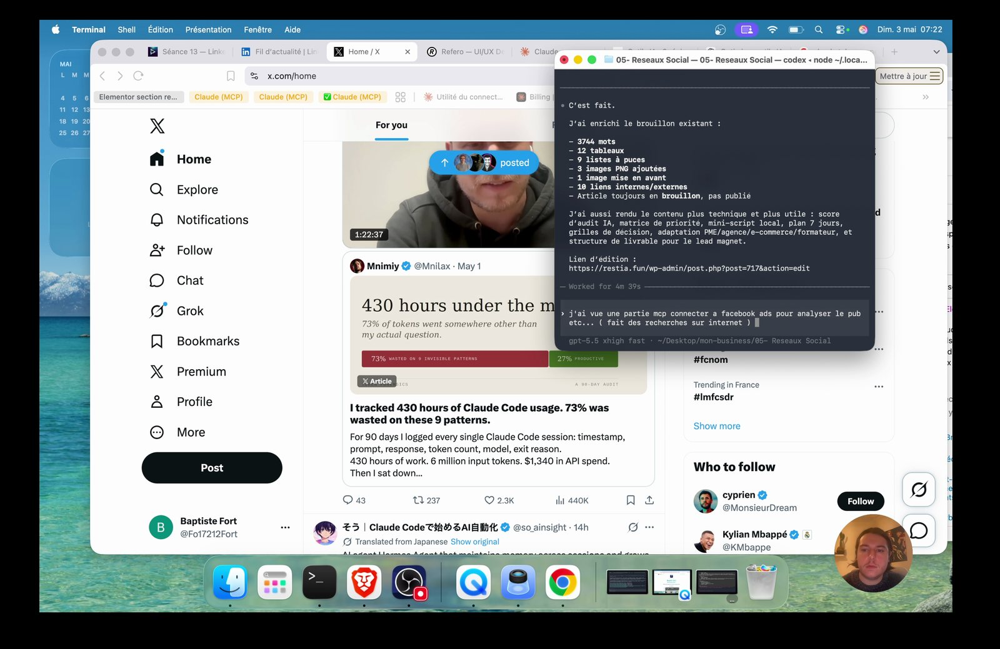
Programmer le post
055
Étape 55
Ce que je mets dans le post
Je mets le problème, ce que contient le dossier, puis la consigne pour recevoir la ressource.
Je veux que la personne puisse utiliser la ressource sans avoir besoin de moi pour comprendre la première étape.
056
Étape 56
Ne pas tout mettre dans LinkedIn
Le post doit donner envie. Le dossier donne la méthode complète.
Avant
Je publie une idée ou une opinion.
Après
Je publie une ressource que la personne veut recevoir.
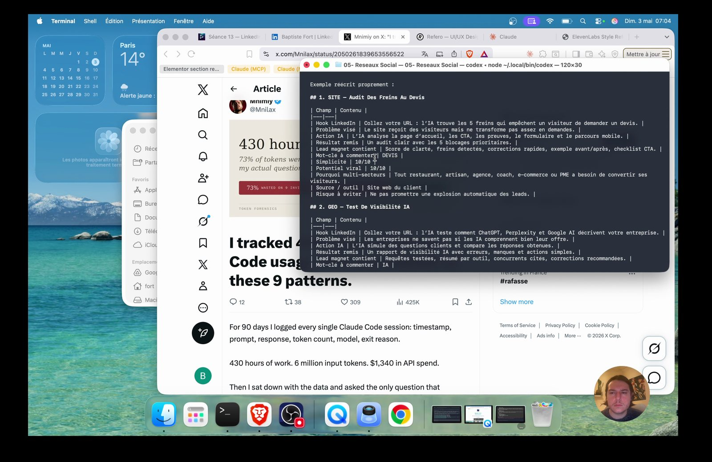
Ne pas tout mettre dans LinkedIn
057
Étape 57
Répondre aux commentaires
Je réponds simplement, puis j’envoie la ressource. Pas besoin d’un message compliqué.
Répondre en message privé
Réponds à cette personne qui a commenté [MOT].
Objectif : envoyer la ressource, créer une vraie conversation, ne pas vendre brutalement.
Message court, naturel, sympathique.
Contexte : [CONTEXTE].
058
Étape 58
Message privé court
Le message privé doit donner le lien et ouvrir une discussion sans pression.
Message privé court
059
Étape 59
Créer la connexion
Ajouter la personne sur LinkedIn augmente la relation et permet une suite plus naturelle.
Je formule l’idée.
Je teste que ça fonctionne.
Je crée le dossier.
Je prépare le post.
Je publie et j’envoie.
060
Étape 60
Mesurer le post
Je regarde impressions, commentaires, republications et clics. Ça me dit quoi améliorer.
visiblepreuve
commentaireaction
DMsuite
Mesurer le post
061
Étape 61
Comprendre pourquoi ça marche
Les gens commentent parce qu’ils veulent gagner du temps, pas parce qu’ils adorent les posts longs.
Question
Réponse attendue
La promesse est claire ?
Oui, en une ligne
Le livrable est prêt ?
Oui, avant publication
Le CTA est simple ?
Oui, un mot
La suite est prévue ?
Oui, DM + lien
062
Étape 62
Ne pas automatiser trop tôt
Au début je gère à la main. J’automatise seulement quand le processus est clair.
Piège à éviter
Si je promets trop, si je parle trop technique ou si je livre une ressource faible, la confiance disparaît.
063
Étape 63
Construire 10 idées avant de publier
Je prépare un stock de sujets pour ne pas dépendre de l’inspiration du jour.
Je formule l’idée.
Je teste que ça fonctionne.
Je crée le dossier.
Je prépare le post.
Je publie et j’envoie.
064
Étape 64
Publier tous les 4 jours
Je laisse le temps au post de vivre, puis je publie une nouvelle ressource.
1Veille
2Test
3Livrable
4Post
5DM
065
Étape 65
Suivre les abonnements
Pour chauffer le compte, je peux ajouter chaque jour des personnes pertinentes sans spammer.
Hook compréhensible
Ressource utilisable
Lien testé
Prompt copiable
CTA clair
066
Étape 66
Faire une preuve avant de promettre
Je teste le workflow ou je produis le dossier avant de publier. La preuve rend le post crédible.
visiblepreuve
commentaireaction
DMsuite
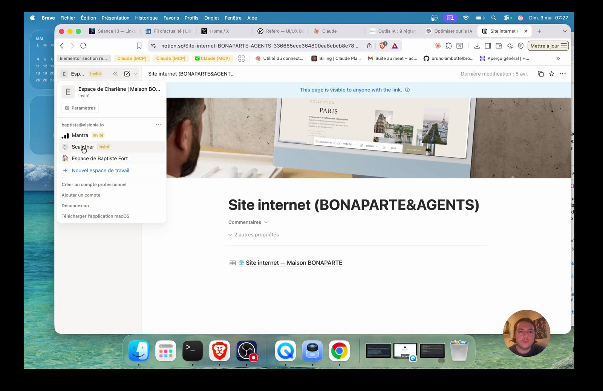
Faire une preuve avant de promettre
067
Étape 67
Nettoyer le livrable
Je corrige les titres, les liens, les prompts, les pages vides et les formulations floues.
Quand c’est possible, je renvoie vers une page de mon site pour capter du trafic utile.
Adapter le positionnement à une page web
en regardant le texte ici remplace le pour mon agence restIA ( utilises les bons mots clés que tu as trouver sur l'audit seo ) sois simple naturel n'en rajoute pas et utilises meme longueur de mots stp pour casser la structure de mon site
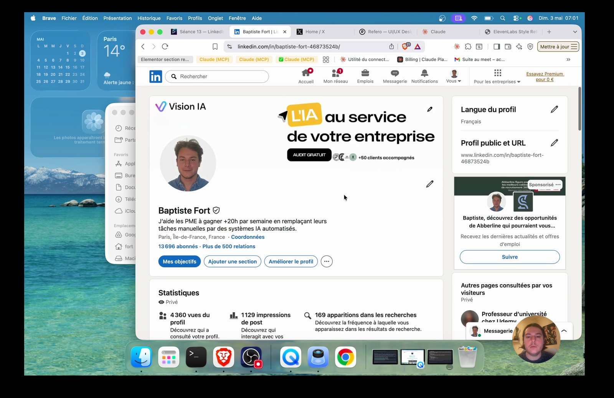
Lien vers mon site
069
Étape 69
Lien vers Notion
Quand je veux livrer vite, Notion suffit. Plus tard, je peux convertir en page web ou PDF.
Avant
Je publie une idée ou une opinion.
Après
Je publie une ressource que la personne veut recevoir.
Lien vers Notion
070
Étape 70
La page de réception
Le lien doit s’ouvrir sans friction. Si la personne doit chercher, l’expérience baisse.
Question
Réponse attendue
La promesse est claire ?
Oui, en une ligne
Le livrable est prêt ?
Oui, avant publication
Le CTA est simple ?
Oui, un mot
La suite est prévue ?
Oui, DM + lien
071
Étape 71
Créer une page ressource
Je peux transformer le dossier en article ou en landing page pour le rendre plus professionnel.
Demander la section suivante
voici la prochaine section
Je transforme le dossier en page.
Je garde une seule idée par section.
Je demande la section suivante.
Je vérifie le rendu.
Je publie uniquement quand le parcours est clair.
072
Étape 72
Ce que je fais si la ressource est trop longue
Je garde un sommaire clair, puis je mets les détails dans des sous-pages.
Hook compréhensible
Ressource utilisable
Lien testé
Prompt copiable
CTA clair
073
Étape 73
Ce que je fais si le sujet est trop technique
Je traduis en bénéfice simple : gagner du temps, mieux décider, trouver des leads.
Avant
Je publie une idée ou une opinion.
Après
Je publie une ressource que la personne veut recevoir.
Ce que je fais si le sujet est trop technique
074
Étape 74
Ce que je fais si l’outil change
Je garde le dossier vivant : je mets à jour les captures, les prompts et les limites.
Piège à éviter
Si je promets trop, si je parle trop technique ou si je livre une ressource faible, la confiance disparaît.
075
Étape 75
La ressource doit être testable
L’élève doit pouvoir refaire une étape et voir si c’est réussi.
Hook compréhensible
Ressource utilisable
Lien testé
Prompt copiable
CTA clair
076
Étape 76
Le bon niveau de détail
Je donne assez d’explications pour refaire, mais je ne noie pas la personne dans des options.
Question
Réponse attendue
La promesse est claire ?
Oui, en une ligne
Le livrable est prêt ?
Oui, avant publication
Le CTA est simple ?
Oui, un mot
La suite est prévue ?
Oui, DM + lien
077
Étape 77
Construire la preuve dans le dossier
J’ajoute une capture, un exemple, une matrice ou un résultat. La preuve rassure.
visiblepreuve
commentaireaction
DMsuite
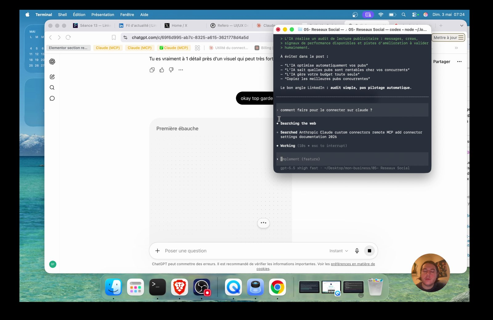
Construire la preuve dans le dossier
078
Étape 78
Garder une seule promesse
Un lead magnet fort n’essaie pas de tout résoudre. Il résout un problème précis.
Piège à éviter
Si je promets trop, si je parle trop technique ou si je livre une ressource faible, la confiance disparaît.
079
Étape 79
Ne pas écrire un post trop corporate
Je garde les phrases courtes et humaines. LinkedIn récompense la clarté.
Hook compréhensible
Ressource utilisable
Lien testé
Prompt copiable
CTA clair
080
Étape 80
Ce que je surveille après publication
Les commentaires, les profils qui réagissent, les messages reçus et les prises de rendez-vous.
Signal
Ce que ça dit
Action
Commentaires
La ressource attire
Répondre vite
Impressions
Le hook circule
Observer
DM
L’intérêt est réel
Envoyer proprement
Calls
La conversion commence
Qualifier
081
Étape 81
Relancer proprement
Si la personne commente mais ne répond pas, je peux relancer avec une phrase courte et utile.
Répondre en message privé
Réponds à cette personne qui a commenté [MOT].
Objectif : envoyer la ressource, créer une vraie conversation, ne pas vendre brutalement.
Message court, naturel, sympathique.
Contexte : [CONTEXTE].
082
Étape 82
Transformer les commentaires en idées
Les questions reçues deviennent de nouvelles sections, de nouveaux posts et de nouveaux prompts.
1Veille
2Test
3Livrable
4Post
5DM
083
Étape 83
Créer une banque de hooks
Je conserve les hooks qui marchent pour les adapter à d’autres sujets.
Type de hook
Exemple
Quand l’utiliser
Nouveauté
Meta Ads vient de donner les clés à Claude
Quand un outil sort
Gain
10 000 leads gratuits
Quand le bénéfice est direct
Ressource
Je viens de créer l’assistant
Quand le livrable est prêt
Contraste
Avant il fallait 4 outils
Quand le changement est fort
084
Étape 84
Créer une banque de sujets
Chaque outil ou nouvelle API peut devenir un dossier si je trouve une application simple.
Idée
Une promesse courte.
Livrable
Un dossier ou une page utile.
Preuve
Une capture ou un exemple réel.
Action
Un mot à commenter.
085
Étape 85
La boucle complète
Veille, test, livrable, post, commentaire, DM, rendez-vous, amélioration.
1Veille
2Test
3Livrable
4Post
5DM
086
Étape 86
Erreurs fréquentes
La plupart des échecs viennent d’une promesse trop floue, d’un livrable faible ou d’un CTA absent.
Piège à éviter
Si je promets trop, si je parle trop technique ou si je livre une ressource faible, la confiance disparaît.
087
Étape 87
Erreur : trop de jargon
Si la personne ne comprend pas le titre, elle ne commentera pas.
Avant
Je publie une idée ou une opinion.
Après
Je publie une ressource que la personne veut recevoir.
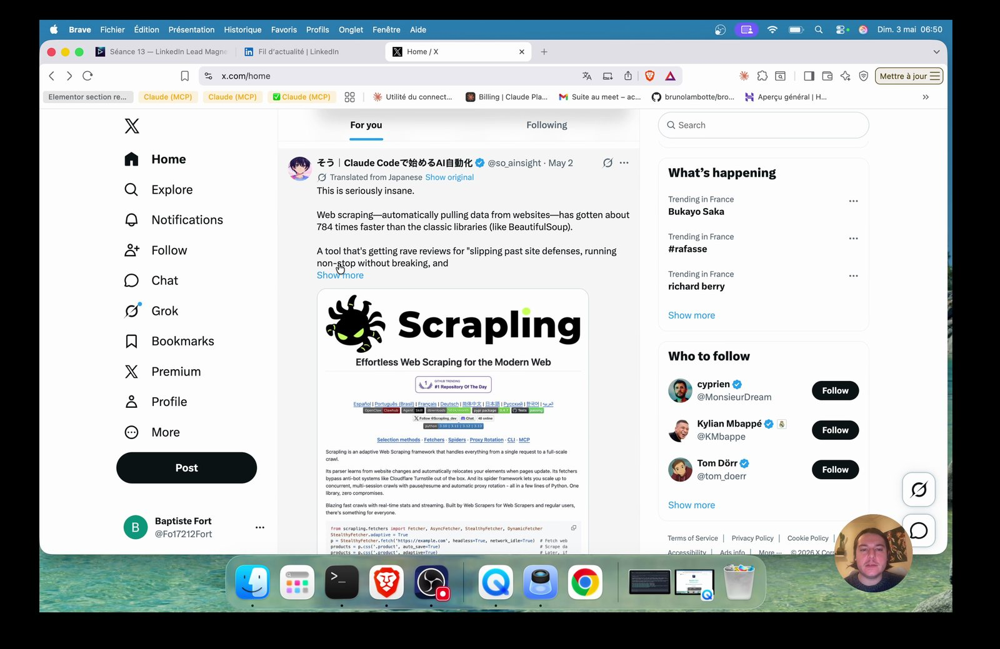
Erreur : trop de jargon
088
Étape 88
Erreur : pas de preuve
Un post sans capture, sans exemple ou sans résultat paraît théorique.
Question
Réponse attendue
La promesse est claire ?
Oui, en une ligne
Le livrable est prêt ?
Oui, avant publication
Le CTA est simple ?
Oui, un mot
La suite est prévue ?
Oui, DM + lien
089
Étape 89
Erreur : ressource commerciale
Si le dossier n’est qu’un prétexte pour vendre, la personne le sent immédiatement.
Piège à éviter
Si je promets trop, si je parle trop technique ou si je livre une ressource faible, la confiance disparaît.
090
Étape 90
Erreur : CTA compliqué
Un seul mot à commenter suffit. Je ne demande pas trois actions au départ.
Hook compréhensible
Ressource utilisable
Lien testé
Prompt copiable
CTA clair
091
Étape 91
Erreur : ne pas répondre
Si je demande de commenter, je dois être prêt à gérer les réponses.
Piège à éviter
Si je promets trop, si je parle trop technique ou si je livre une ressource faible, la confiance disparaît.
092
Étape 92
Exercice élève
Tu vas choisir un sujet, écrire le hook, créer le dossier, puis préparer le post.
Je formule l’idée.
Je teste que ça fonctionne.
Je crée le dossier.
Je prépare le post.
Je publie et j’envoie.
093
Étape 93
Checklist avant publication
Avant de publier, je vérifie le hook, le livrable, le lien, le CTA et le message privé.
Le hook tient seul.
Le dossier est terminé.
Le lien fonctionne.
Le mot à commenter est clair.
Le message privé est prêt.
Je peux répondre aux premiers commentaires.
094
Étape 94
Checklist du dossier
Le dossier doit contenir les prompts, les étapes, les erreurs et le plan d’action.
Sommaire
Prompts
Étapes
Captures
Checklist
Matrice
Plan 7 jours
Liens utiles
095
Étape 95
Score rapide du lead magnet
Je note le sujet sur simplicité, utilité, nouveauté, preuve et facilité d’envoi.
Critère
Note /10
Question
Simplicité
?
Un dirigeant comprend-il en 5 secondes ?
Utilité
?
Est-ce que ça fait gagner du temps ?
Nouveauté
?
Est-ce que le sujet intrigue ?
Preuve
?
Ai-je un exemple réel ?
Envoi
?
Puis-je le donner vite ?
096
Étape 96
Plan de production sur 2 jours
Jour 1 : veille, sujet, test. Jour 2 : dossier, post, visuel, publication.
1Veille
2Test
3Livrable
4Post
5DM
097
Étape 97
Plan d’action 7 jours
Je transforme le lead magnet en routine hebdomadaire pour construire mon audience.
Jour 1
Choisir le sujet
Jour 2
Tester le workflow
Jour 3
Créer le dossier
Jour 4
Préparer le post
Jour 5
Publier
Jour 6
Répondre aux commentaires
Jour 7
Améliorer le système
098
Étape 98
Ce que tu dois retenir
Un lead magnet est un système, pas un document isolé.
Je veux que la personne puisse utiliser la ressource sans avoir besoin de moi pour comprendre la première étape.
099
Étape 99
Liens finaux
Les quatre posts LinkedIn restent accessibles pour comparer les exemples réels.
Prépare une version finale de mon post LinkedIn.
Contraintes :
- hook fort
- une seule idée
- ressource claire
- CTA simple
- pas trop d'emoji
- phrases courtes
- ton direct
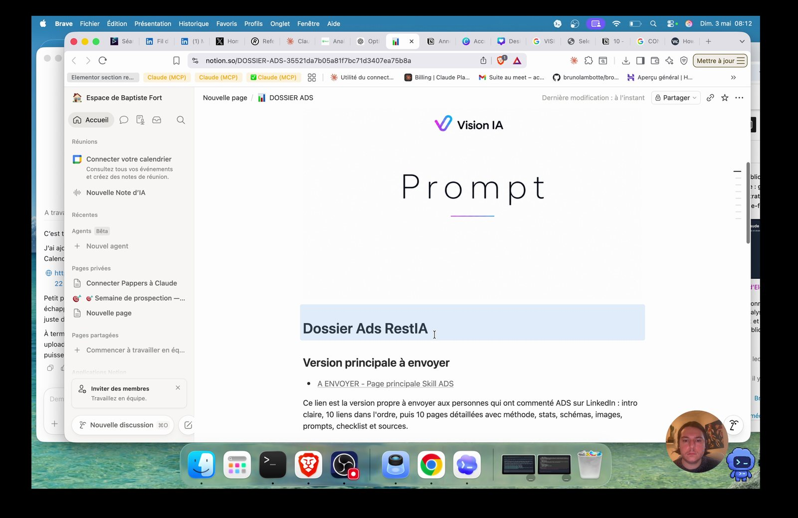
Récap final
Documentation
Documentation
Liens externes utiles pour refaire la methode, verifier un outil et aller plus loin sans chercher au hasard.